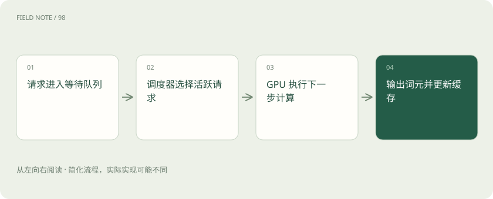
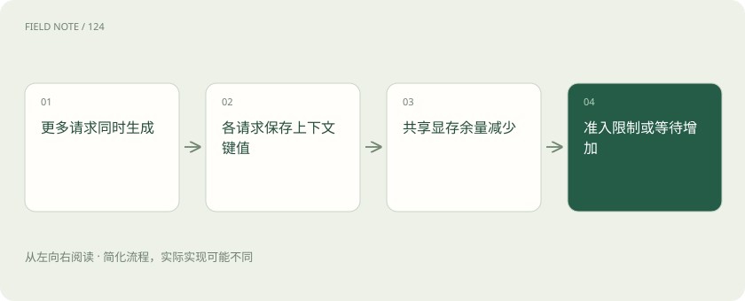
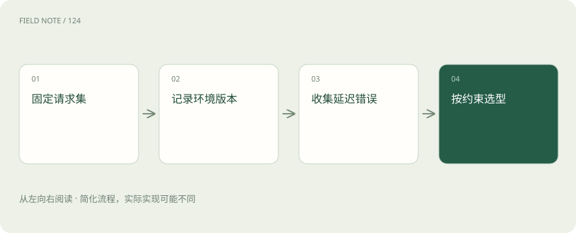

先说这篇在讲什么
同样一份模型文件，放到不同运行引擎上，速度可能不同。TensorRT-LLM、vLLM 和 SGLang 就像不同的加工安排。这篇解释它们试图省下哪些工作，再说明为什么不能只凭某张“最快”榜单作决定。
先看一个具体例子
客服请求大多共享产品说明，而写作平台每次材料差异很大。即使使用相同模型，两种业务从前缀缓存得到的收益也可能很不同。
遇到陌生概念，可以先读
打个比方，帮助理解
这是帮助理解的比方，实际过程以正文说明为准。
一图看懂

模型文件之外，还需要谁来安排计算
权重文件保存参数，运行时还需要程序加载它、选择计算方法、安排不同请求并管理缓存，这些工作通常由推理引擎承担。引擎不替模型增加一套新知识，但能改变处理同一任务的效率。支持某个模型也不是只认文件后缀，还要看结构、精度和设备。先问“目标模型能否按要求跑起来”，再问“哪一个更快”，能少走很多弯路。
TensorRT-LLM 在优化什么
TensorRT-LLM 围绕 NVIDIA GPU 提供模型计算与运行优化。你可能见过需要先准备优化引擎的旧说明，但不能把旧流程当成所有当前路径；它也有 PyTorch 后端。后端可以先理解为实际执行计算的一套实现。选择时要看所用版本的模型、设备和精度支持。某条路径在某硬件上优化很好，不代表换到另一种设备或结构仍有同样效果。
vLLM 怎样处理生成中的缓存
生成每位用户的回答，都要使用前文的 KV 计算结果。vLLM 的分页式缓存管理，把这些结果按块组织，可以更灵活地分配空间；连续批处理则让完成的请求腾出位置，接入新请求。可以类比不再为每个顾客永久占一大片空座位。但缓存仍然真实占显存，人数多、对话长，空间还是可能不够。管理更灵活，不等于容量无限。
例如一批请求里，有人很快答完，有人要写长报告。如果快请求释放的位置能让新人及时进来，设备就少空等。这也是为什么只看单人测试，不足以判断一个客服平台忙起来的表现。缓存块怎样回收和新请求怎样加入，会共同影响服务是否稳定。
图解：并发如何消耗 KV 缓存

SGLang 怎样利用共同前文
许多请求共享同一段说明，重复计算这段内容很浪费。SGLang 的 RadixAttention 等机制围绕前缀缓存复用组织工作，帮助利用共同输入。可以先理解为把相同开头算过的结果放好，下次在条件允许时接着用。收益取决于请求是否真的共享前缀，以及缓存是否仍在。每个人问题都不同、缓存经常被清走时，就不能照搬共享前文很多时的加速数字。
显存容量要算正在做的事
引擎除了放权重，还要放各请求的 KV、临时计算结果及管理所需空间。一台机器能加载模型，不代表还能接下很多长对话。输入和输出的长度也要分开：长输入短回答与短输入长回答，给预填充和解码带来的压力不同。可以分别测试这些任务，而不是把所有长度揉成一个“平均请求”，否则得到的配置可能与真正用户的使用方式很不一样。
量化和速度，要与答案质量一起看
降低部分数值精度可以省空间，但具体能否提速取决于实现和设备。有些任务对细微差别更敏感，例如结构化提取是否漏字段、数值计算是否出错。不要把不同精度的结果直接归因为引擎差别。报告应说明模型、精度、聊天模板和设置；模板就是把用户与助手内容组织成模型预期输入的格式，弄错它，也可能让同一个模型表现变差。
怎样做一次能比较的速度检查
先固定一批有代表性的输入、输出要求和到达方式，再在同等资源下观察。预热要说清：刚启动时下载和加载模型，与已经稳定运行不是一回事。缓存热不热也要分别说明。除了每秒处理量，还记录第一个输出等多久、后续是否连续、失败和超时有多少。慢请求不应被删掉，否则报告会只剩跑得顺利的部分，用户真实体验反而被掩盖。
请求到达方式也要讲清楚：所有人一起点提交，与每秒平稳进来几个人，会产生不同队列。若只统计已成功的请求，再把超时样本扔掉，平均速度可能很好看，用户却不断重试。成功比例和每个任务的实际完成时间，需要与吞吐一起报告。
图解：压测证据链

最后怎么选，而不是给工具永久排名
如果某引擎在你的模型和请求上满足质量、等待和维护要求，就有具体价值。另一个引擎也可能更适合不同结构或共同前文更多的业务。低负载和高并发下的表现可能不同，平台能否方便部署与排错也会影响总成本。结论最好写成“在这些条件下更适合”，而不是“它永远最快”。以后升级模型或改变业务时，再用同一套任务重新比较。
维护成本也有具体内容：出错时能否看到原因、目标模型升级后是否容易复测、团队是否熟悉配置和回滚。一个只在极窄条件下快一点、却经常需要手动排障的组合，未必比稍慢但稳定的组合更适合日常使用。这些因素不会直接出现在一次峰值测速里。
放在一起对比
| 方案 | 负责 | 需要另行解决 |
|---|---|---|
| TensorRT-LLM | 围绕 NVIDIA GPU 内核和运行时优化 | 检查硬件、模型与精度组合 |
| vLLM | 分页 KV 缓存与连续批处理 | 缓存容量仍受并发长度影响 |
| SGLang | 前缀树缓存复用与服务调度 | 收益取决于前缀共享和负载 |
读完先记住这一句
别踩这个误区
想一想
模型能加载成功，为什么同时来很多用户时还会失败？
加载只是放下了基础权重；并发请求和长输入还要额外占用缓存和计算空间，可能超过剩余容量。
关联阅读
资料与边界
本文为原创知识讲解。类比和图示经过简化；示例数字不代表实测或报价。整理日期：2026-11-05。文末列出对应技术的原始资料，具体功能与版本支持请以原文为准。
按完整目录逐篇阅读